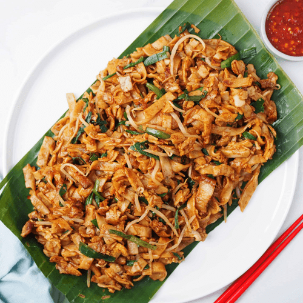

Hainanese chicken rice is a dish of poached chicken and seasoned rice, served with chilli sauce and usually with cucumber garnishes. It was created by immigrants from Hainan in southern China and adapted from the Hainanese dish Wenchang chicken..
Fried Kway Teow
Char kway teow is a stir-fried rice noodle dish from Maritime Southeast Asia of southern Chinese origin. In Hokkien and Teochew, char means 'stir-fried' and kway teow refers to flat rice noodles.

Nasi Lemak
Nasi lemak is a dish originating in Malay cuisine that consists of fragrant rice cooked in coconut milk and pandan leaf. It is commonly found in Malaysia, where it is considered as the national dish.